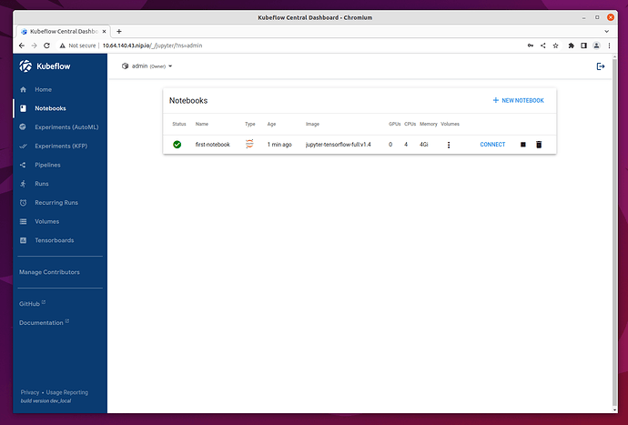
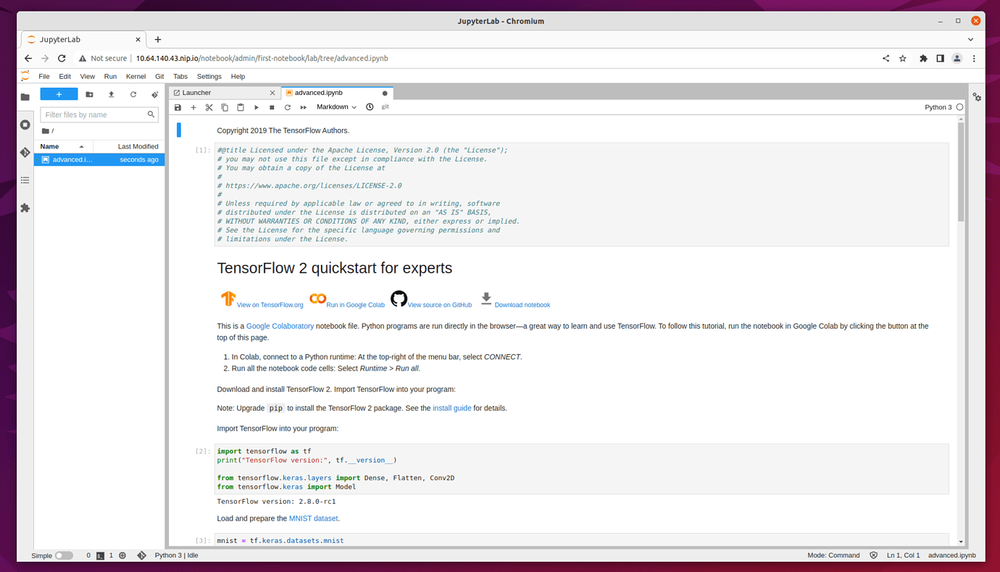
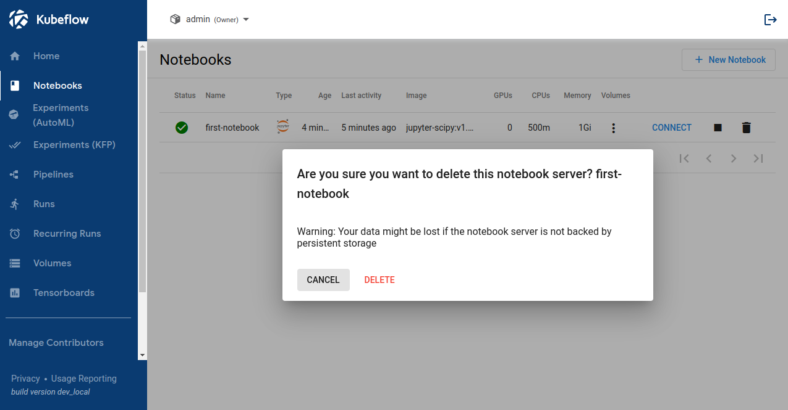
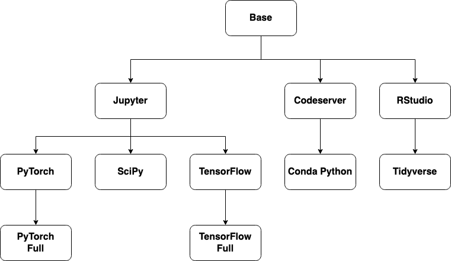

Kubeflow Notebooks¶
Kubeflow Notebooks provides a way to run web-based development environments inside your Kubernetes cluster by running them inside Pods.
Create a Kubeflow Notebook¶
The dashboard will give you an overview of the Notebook Servers currently available on your Kubeflow installation. In a freshly installed Kubeflow there will be no Notebook Server. You will create a new Notebook Server by clicking on “Notebooks” in the left-side navigation and then clicking on the “New Notebook” button.
In the “New Notebook” section you will be able to specify several options for the notebook you are creating. In the image section choose an image of jupyter-tensorflow-full. It is required for our example notebook. (More details about container images used for Notebook Server are introduced in following sections.) Please leave the CPU and memory requirements to the default ones.
Once the Notebook Server is created, you connect to it by clicking on the “Connect” button from the left side to it and access your Jupyter Notebook environment which will be opened in a new tab.
For testing the server we will upload the Tensorflow 2 quickstart for experts example.
Click on the link above and click on the “Download Notebook” button just below the heading. This will download the file advanced.ipynb into your usual Download location. This file will be used to create the example notebook.
On the “Notebook Server” page, click on the “Upload” button, which is located in the side-bar at the top, and select the advanced.ipnyb file.
Once uploaded, click on the notebook name to open a new tab with the notebook content.
You can read through the content for a better understanding of what this notebook does. Click on the Run button “▶︎” to execute each stage of the document, or click on the double-chevron “>>” to execute the entire document.
Kubeflow Notebook Volume¶
In order to see the volume of the notebook that you just created in the previous step, please click on “Volumes” on the left side-bar. You will see a volume that has the same name as the notebook with -volume at the end.
Delete a Kubeflow Notebook¶
In order to delete a new notebook, you will click on “Notebooks” in the left-side navigation. Go to the notebook you want to delete, an click on the small trash bin icon situated alongside the notebook.
A new window will appear on your screen. Click “Delete”.
Container Images¶
In above sections, we choose an image of jupyter-tensorflow-full when creating the Notebook Server. In this section, we will introduce you to
container images more in details.
Kubeflow Notebooks natively supports three types of notebooks: JupyterLab, RStudio, and Visual Studio Code (code-server). But any web-based IDE should work. Notebook Servers run as containers inside a Kubernetes Pod, which means the type of IDE (and which packages are installed) is determined by the Docker image you pick for your server.
Provided Images¶
Kubeflow provides a number of example container images for you to get started. The link guides you to a Git repo in which you can find the Dockerfile of each provided example container image.
Base Images¶
These images provide a common starting point for Kubeflow notebook containers.
Dockerfile |
Registry |
Notes |
|---|---|---|
public.ecr.aws/j1r0q0g6/notebooks/notebook-servers/base:{TAG} |
common base iamge |
|
public.ecr.aws/j1r0q0g6/notebooks/notebook-servers/codeserver:{TAG} |
base code-server (Visual Studio Code) image |
|
public.ecr.aws/j1r0q0g6/notebooks/notebook-servers/jupyter:{TAG} |
base JupyterLab image |
|
public.ecr.aws/j1r0q0g6/notebooks/notebook-servers/rstudio:{TAG} |
base RStudio image |
Full Images¶
These images extend the base images with common packages used by Data Scientists and ML Engineers.
Dockerfile |
Registry |
Notes |
|---|---|---|
public.ecr.aws/j1r0q0g6/notebooks/notebook-servers/codeserver-python:{TAG} |
code-server (Visual Studio Code) + Conda Python |
|
public.ecr.aws/j1r0q0g6/notebooks/notebook-servers/jupyter-pytorch:{TAG} |
JupyterLab + PyTorch (CPU) |
|
public.ecr.aws/j1r0q0g6/notebooks/notebook-servers/jupyter-pytorch-cuda:{TAG} |
JupyterLab + PyTorch (CUDA) |
|
public.ecr.aws/j1r0q0g6/notebooks/notebook-servers/jupyter-pytorch-full:{TAG} |
JupyterLab + PyTorch (CPU) common packages |
|
public.ecr.aws/j1r0q0g6/notebooks/notebook-servers/jupyter-pytorch-cuda-full:{TAG} |
JupyterLab + PyTorch (CUDA) + common packages |
|
public.ecr.aws/j1r0q0g6/notebooks/notebook-servers/jupyter-scipy:{TAG} |
JupyterLab + SciPy packages |
|
public.ecr.aws/j1r0q0g6/notebooks/notebook-servers/jupyter-tensorflow:{TAG} |
JupyterLab + TensorFlow (CPU) |
|
public.ecr.aws/j1r0q0g6/notebooks/notebook-servers/jupyter-tensorflow-cuda:{TAG} |
JupyterLab + TensorFlow (CUDA) |
|
public.ecr.aws/j1r0q0g6/notebooks/notebook-servers/jupyter-tensorflow-full:{TAG} |
JupyterLab + TensorFlow (CPU) + common packages |
|
public.ecr.aws/j1r0q0g6/notebooks/notebook-servers/jupyter-tensorflow-cuda-full:{TAG} |
JupyterLab + TensorFlow (CUDA) + common packages |
|
public.ecr.aws/j1r0q0g6/notebooks/notebook-servers/rstudio-tidyverse:{TAG} |
RStudio + Tidyverse packages |
Image Dependency Chart¶
This flow-chart shows how our notebook container images depend on each other.

Custom Images¶
Packages installed by users after spawning a Kubeflow Notebook will only last the lifetime of the pod (unless installed into a PVC-backed directory).
To ensure packages are preserved throughout Pod restarts, users will need to either:
Build custom images that include them, or
Ensure they are installed in a PVC-backed directory
Python Packages¶
Warning
A common cause of errors is users running pip install --user ..., causing the home-directory (which is backed by a PVC) to contain a different or
incompatible version of a package contained in /opt/conda/...
Extend one of the base images and install any pip or conda packages your Kubeflow Notebook users are likely to need.
As a guide, look at jupyter-pytorch-full.cpu
for a pip install ... example, and the rstudio-tidyverse
for conda install ....
Linux Packages¶
Warning
Ensure you swap to root in the Dockerfile before running apt-get, and swap back to jovyan after.
Extend one of the base images and install any apt-get package your Kubeflow Notebook users are likely to need.
S6¶
Some use-cases might require custom scripts to run during the startup of the Notebook Server container, or advanced users might want to add additional services that run inside the container (for example, an Apache or NGINX web server). To make this easy, we use the s6-overlay.
The s6-overlay differs from other init systems like tini. While tini was created to handle a single
process running in a container as PID 1, the s6-overlay is built to manage multiple processes and allows the creator of the image to determine which
process failures should silently restart, and which should cause the container to exit.
Scripts
Scripts that need to run during the startup of the container can be placed in /etc/cont-init.d/, and are executed in ascending alphanumeric order.
An example of a startup script can be found in ./rstudio/s6/cont-init.d/02-rstudio-env-fix.
This script uses the with-contenv helper so that environment variables (passed to
container) are available in the script. The purpose of this script is to snapshot any KUBERNETES_* environment variables into the Renviron.site
at pod startup, as without these variables kubectl does not work.
Services
Extra services to be monitored by s6-overlay should be placed in their own folder under /etc/services.d/ containing a script called run and
optionally a finishing script finish.
For more information about the run and finish scripts, please see the s6-overlay documentation.
An example of a service can be found in the run script of
jupyter/s6/services.d/jupyterlab
which is used to start JupyterLab itself.
Run as root
Warning
Our example images run s6-overlay as $NB_USER (not root), meaning any files or scripts related to s6-overlay must be owned by the
$NB_USER user to successfully run
There may be cases when you need to run a service as root, to do this, you can change the Dockerfile to have USER root at the end, and then use
s6-setuidgid to run the user-facing services as $NB_USER.
For more information and troubleshooting, refer to custom images git repo.
Image requirements¶
For Kubeflow Notebooks to work with a container image, the image must:
expose an HTTP interface on port
8888: * Kubeflow sets an environment variableNB_PREFIXat runtime with the URL path we expect the container be listening under * Kubeflow uses IFrames, so ensure your application setsAccess-Control-Allow-Origin: *in HTTP response headersrun as a user called
jovyan: * the home directory ofjovyanshould be/home/jovyan* the UID ofjovyanshould be1000start successfully with an empty PVC mounted at
/home/jovyan: * Kubeflow mounts a PVC at/home/jovyanto keep state across Pod restarts